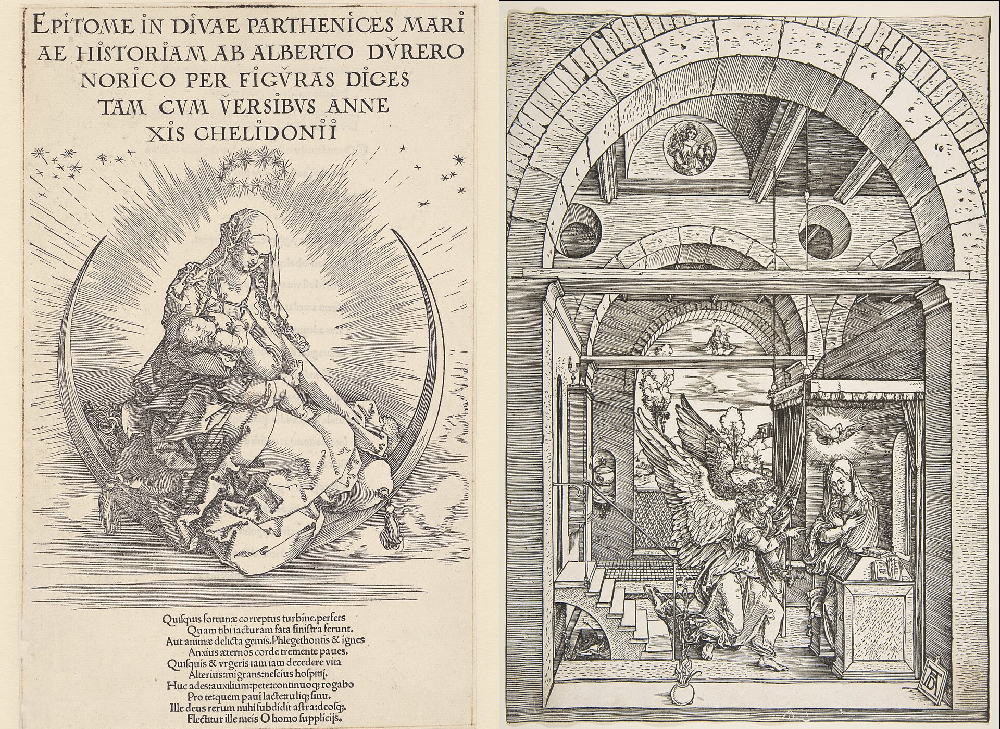
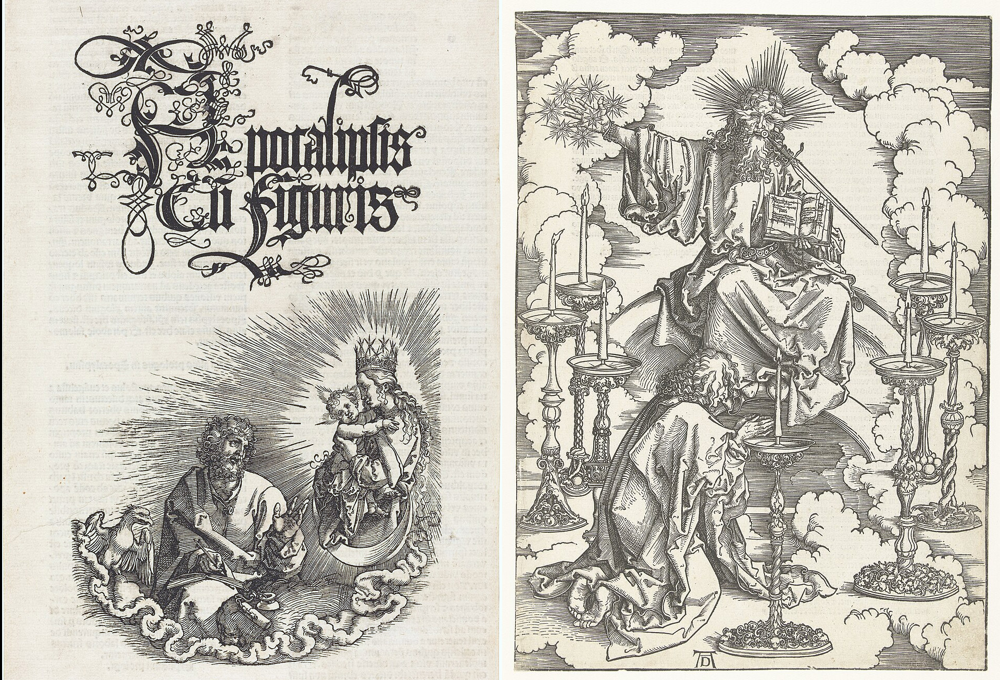

Part 1: Letters from Venice to Wilibald Pirkheimer, 1506-7
Part 2: Diary of a Journey in the Netherlands, 1520-1
Introduction
This page contains the full text of the book Records of Journeys to Venice and the Low Countries, Rudolf Tombo's 1913 translation of Dürer's 1506-7 Venetian Letters and his 1520-1 Netherlands Diary. In addition to the text itself, which can be found elsewhere online, I have added here extra images and annotations to help fill in the details of the rich, 16th-century world Dürer paints in his writings. The original translation contains some editor's notes; these are retained in the text itself. My notes appear to the side. Clicking the orange button below will remove them from the page, leaving only the original text (and my added images).
I have drawn my notes from a wide range of sources. Any information that cannot be found with a simple online search will be cited. By far the most useful resource for me has been the endnotes of Rudolf Eitelberger's Dürers Briefe, Tagebücher und Reime, the third volume of the Quellenschriften für Kunstgeschichte und Kunsttechnik des Mittelalters und der Renaissance, published in Vienna in 1872. A scan of the entire text is available online; it contains additional letters which have yet to be translated into English, as well as some which are only available in William Martin Conway's 1964 translation The Writings of Albrecht Dürer.
Dürer's letters and diaries, written in a shockingly modern-sounding voice, help serve to humanize the past and those who lived in it. I hope you find as much interest and joy in them as I do!
- Hide Sidenotes
Cast of [some of the] Characters:
Agnes Dürer née Frey (1475–1539): Married Albrecht on July 7th, 1494. She was the subject of several portraits by Albrecht. During his 1505-7 trip through Italy she remained in Nuremberg and ran Albrecht's workshop; she accompanied him to the Netherlands in 1520-1

Wilibald Pirkheimer (1470-1530): German lawyer, author and Renaissance humanist, a wealthy patron in 16th century Nuremberg; Dürer's best friend

Michael Wolgemut 1434–1519): The master painter with whom Dürer began formal training as an apprentice. Later, Dürer painted a richly detailed portrait of him.

Giovanni Bellini (c. 1430–1516): Famous Renaissance painter and contemporary of Dürer, he came from the famed Bellini family of Venetian painters.
Jan van Eyk (c. before 1390–1441: Famous Flemish Renaissance painter.
Hans Imhoff, the elder: of the patrician Imhoff family of Nuremberg; the younger Imhof, a close friend of Dürer and Pirkheimer, was in Venice representing the Imhoff Trading Company. Numerous Imhoff's appear throughout the text.
Forms of Money Referred to in the Letters
Marcelli: A Venetian coin worth 10 soldi.
Stiver A Netherlandish coin worth about 80 pfennigs.
Philip's A Netherlandish coin worth rather less than a Rhenish florin.
Crown: A Netherlandish coin worth 6.35 marks.
Noble The Rosennobel = 8 marks, 20 pfennigs. The Flemish noble = 9 marks, 90 pfennigs.
Blanke A silver coin = 2 stivers.
Angel: An English coin = 2 florins, 2 stivers Netherlandish.
Part 1: Letters from Venice to Wilibald Pirkheimer
Venice, 6th January, 1506
To the Honourable and wise Wilibald Pirkheimer, in Nuremberg.
My dear Master, To you and all yours, many happy good New Years. My willing service to you, dear Herr Pirkheimer. Know that I am in good health; may God send you better even than that. Now as to what you commissioned me, namely, to buy a few pearls and precious stones, you must know that I can find nothing good enough or worth the money: everything is snapped up by the Germans.
Those who go about on the Riva always expect four times the value for anything, for they are the falsest knaves that live there. No one expects to get an honest service of them. For that reason some good people warned me to be on my guard against them. They told me that they cheat both man and beast, and that you could buy better things for less money at Frankfort than at Venice.
As for the books which I was to order for you, Imhof has already seen to it, but if you are in need of anything else, let me know, and I shall do it for you with all zeal. And would to God that I could do you some real good service. I should gladly accomplish it, since I know how much you do for me.
And I beg of you be patient with my debt, for I think oftener of it than you do. As soon as God helps me to get home I will pay you honourably, with many thanks; for I have to paint a picture for the Germans, for which they are giving me 110 Rhenish gulden, which will not cost me as much as five. I shall have finished laying and scraping the ground-work in eight days, then I shall at once begin to paint, and if God will, it shall be in its place for the altar a month after Easter.
[Editor note: This refers to the [altarpiece called the] "Madonna of the Rose Garlands," painted for the chapel of S. Bartolommeo, the burial-place of the German colony. About the year 1600 it was bought for a high price by the Emperor Rudolf II, who is said to have had it carried [over the Alps] by four men all the way to Prague to avoid the risk of damage in transport. [It suffered serious water damage during the Thirty Years' War of 1618-1648, and many parts of it had to be repainted to replace much of the original paint that was lost, but] it still remains one of the most important [and lavishly colored] of all Dürer's works.]

The money I hope, if God will, to put by; and from that I will pay you: for I think that I need not send my mother and wife any money at present; I left 10 florins with my mother when I came away; she has since got 9 or 10 florins by selling works of art. Dratzieher has paid her 12 florins, and I have sent her 9 florins by Sebastian Imhof, of which she has to pay Pfinzing and Gartner 7 florins for rent. I gave my wife 12 florins and she got 13 more at Frankfort, making all together 25 florins, so I don't think she will be in any need, and if she does want anything, her brother will have to help her, until I come home, when I will repay him honourably. Herewith let me commend myself to you.
Given at Venice on the day of the Holy Three Kings (Epiphany), the year 1506. Greet for me Stephen Paumgartner and my other good friends who ask after me.
—Albrecht Dürer

Venice, 7th February, 1506
First my willing service to you, dear Master. If it is well with you, I am as whole-heartedly glad as I should be for myself. I wrote to you recently. I hope the letter reached you. In the meantime my mother has written to me, chiding me for not writing to you, and has given me to understand that you are displeased with me because I do not write to you; and that I must excuse myself to you fully. And she is much worried about it, as is her wont. Now I do not know what excuse to make, except that I am lazy about writing and that you have not been at home. But as soon as I knew that you were at home or were coming home, I wrote to you at once; I also specially charged Castel (Fugger) to convey my service to you. Therefore I most humbly beg you to forgive me, for I have no other friend on earth but you; but I do not believe you are angry with me, for I hold you as no other than a father.
How I wish you were here at Venice, there are so many good fellows among the Italians who seek my company more and more every day—which is very gratifying to me—men of sense, and scholarly, good lute-players, and pipers, connoisseurs in painting, men of much noble sentiment and honest virtue, and they show me much honour and friendship. On the other hand, there are also amongst them the most faithless, lying, thievish rascals; such as I scarcely believed could exist on earth; and yet if one did not know them, one would think that they were the nicest men on earth. I cannot help laughing to myself when they talk to me: they know that their villainy is well known, but that does not bother them.
I have many good friends among the Italians who warn me not to eat and drink with their painters, for many of them are my enemies and copy my work in the churches and wherever they can find it; afterwards they criticize it and claim that it is not done in the antique style and say it is no good, but Giambellin (Giovanni Bellini) has praised me highly to many gentlemen. He would willingly have something of mine, and came himself to me and asked me to do something for him, and said that he would pay well for it, and everyone tells me what an upright man he is, so that I am really friendly with him. He is very old and yet he is the best painter of all.
[Editor's note: The character of Bellini agrees with all we know of him. Camerarius tells an amusing story of the two artists, to the effect that Bellini once asked Dürer for one of the brushes with which he painted hairs. Dürer produced several quite ordinary brushes and offered them to Bellini. Bellini replied that he did not mean those, but some brush with the hairs divided which would enable him to draw a number of fine parallel lines such as Dürer did. Dürer assured him that he used no special kind, and proceeded to draw a number of long wavy lines like tresses with such absolute regularity and parallelism that Bellini declared that nothing but seeing it done would have convinced him that such a feat of skill was possible.]
And the thing which pleased me so well eleven years ago pleases me no longer, and if I had not seen it myself, I would not have believed anyone who told me. And you must know too that there are many better painters here than Master Jacob (Jacopo de Barbari), though Antonio Kolb would take an oath that there was no better painter on earth than Jacob. Others sneer at him and say if he were any good, he would stay here. I have only today begun the sketch of my picture, for my hands are so scabby that I could not work, but I have cured them.
And now be lenient with me and do not get angry so quickly, but be gentile like me. You will not learn from me, I do not know why. My dear, I should like to know whether any of your loves is dead—that one close by the water, for instance, or the one like  or
or  or
or  's girl so that you might get another in her stead.
's girl so that you might get another in her stead.
Given at Venice at the ninth hour of the night on Saturday after Candlemas in the year 1506. [Editor's note: Reckoning from sunset, at this season [this] would be about 2:30 a.m.] Give my service to Stephen Paumgartner and to Masters Hans Harsdorfer and Volkamer.
—Albrecht Dürer
Venice, 28th February, 1506
First my willing service to you, dear Herr Pirkheimer. If things go well with you, then I am indeed glad. Know, too, that by the grace of God I am doing well and working fast. Still I do not expect to have finished before Whitsuntide. I have sold all my pictures except one. For two I got 24 ducats, and the other three I gave for these three rings, which were valued in the exchange as worth 24 ducats, but I have shown them to some good friends and they say they are only worth 22, and as you wrote to me to buy you some jewels, I thought that I would send you the rings by Franz Imhof. Show them to people who understand them, and if you like them, keep them for what they are worth. In case you do not want them, send them back by the next messenger, for here at Venice a man who helped to make the exchange will give me 12 ducats for the emerald and 10 ducats for the ruby and diamond, so that I need not lose more than 2 ducats.
I wish you had occasion to come here, I know the time would pass quickly, for there are so many nice men here, real artists. And I have such a crowd of foreigners (Italians) about me that I am forced sometimes to shut myself up, and the gentlemen all wish me well, but few of the painters.
Dear Master, Andreas Kunhofer sends you his service and means to write to you by the next courier. Herewith let me be commended to you, and I also commend my mother to you. I am wondering greatly why she has not written to me for so long, and as for my wife, I begin to think that I have lost her, and I am surprised too that you do not write to me, but I have read the letter which you wrote to Sebastian Imhof about me. Please give the two enclosed letters to my mother, and have patience, I pray, till God brings me home, when I will honourably repay you. My greetings to Stephen Pirkheimer and other good friends, and let me know if any of your loves are dead. Read this according to the sense: I am hurried.
Given in Venice, the Sunday before Whitsunday, the year 1506.
—Albrecht Dürer
[p.s.] Tomorrow it is good to confess.
Venice, 8th March, 1506
First my willing service to you, dear Herr Pirkheimer. I send you herewith a ring with a sapphire about which you wrote so urgently. I could not send it sooner, for the past two days I have been running around to all the German and Italian goldsmiths that are in all Venice with a good assistant whom I hired: and we made comparisons, but were unable to match this one at the price, and only after much entreaty could I get it for 18 ducats 4 marcelli from a man who was wearing it on his own hand and who let me have it as a favour, as I gave him to understand that I wanted it for myself. And as soon as I had bought it a German goldsmith wanted to give me 3 ducats more for it than I paid, so I hope that you will like it. Everybody says that it is a good stone, and that in Germany it would be worth about 50 florins; however, you will know whether they tell truth or lies. I understand nothing about it. I had first of all bought an amethyst for 12 ducats from a man whom I thought was a good friend, but he deceived me, for it was not worth 7; but the matter was arranged between us by some good fellows: I will give him back the stone and make him a present of a dish of fish. I was glad to do so and took my money back quickly. As my good friend values the ring, the stone is not worth much more than 10 Rhenish florins, whilst the gold of the ring weighs about up to 5 florins, so that I have not gone beyond the limit set me, as you wrote "from 15 to 20 florins." But the other stone I have not yet been able to buy, for 10 one finds them rarely in pairs; but I will do all I can about it. They say here that such trumpery fool's work is to be had cheaper in Germany, especially now at the Frankfurt Fair. For the Italians take such stuff abroad, and they laugh at me, especially about the jacinth cross, when I speak of 2 ducats, so write quickly and tell me what I am to do. I have heard of a good diamond ornament in a certain place, but I do not yet know what it will cost. I shall buy it for you until you write again, for emeralds are as dear as anything I have seen in all my days. It is easy enough for anyone to get a small amethyst if he thinks it worth 20 or 25 ducats.
It really seems to me you must have taken a mistress; only beware you don't get a master. But you are wise enough about your own affairs.
Dear Pirkheimer, Andreas Kunhofer sends you his service. He intends in the meantime to write to you, and he prays you if necessary to explain for him to the Council why he does not stay at Padua; he says there is nothing there for him to learn. Don't be angry I pray you with me for not sending all the stones on this occasion, for I could not get them all ready. My friends tell me that you should have the stone set with a new foil and it will look twice as good again, for the ring is old, and the foil spoiled. And I beg you too to tell my mother to write me soon and have good care of herself. Herewith I commend myself to you.
Given at Venice on the second Sunday in Lent, 1506.
—Albrecht Dürer
[p.s.] Greetings to your loves.
Venice, 2nd April, 1506
First my willing service to you, dear Sir.
I received a letter from you on the Thursday before Palm Sunday, together with the emerald ring, and went immediately to the man from whom I got the rings. He will give me back my money for it, although it is a thing that he does not like to do; however, he has given me his word and he must hold to that. Do you know that the jewelers buy emeralds abroad and sell them here at a profit? But my friends tell me that the other two rings are well worth 6 ducats apiece, for they say that they are fine and clear and contain no flaws. And they say that instead of taking them to the valuer you should enquire for such rings as they can show you and then compare them and see whether they are like them; and if when I got them by exchange I had been willing to lose 2 ducats on the three rings, Bernard Holzbeck, who was present at the transaction, would have bought them of me. I have since sent you a sapphire ring by Franz Imhof, I hope it has reached you. I think I made a good bargain at that place, for they offered to buy it of me at a profit on the spot. But I shall find out from you, for you know that I understand nothing about such things and am forced to trust those who advise me.
The painters here you must know are very unfriendly to me. They have summoned me three times before the magistrates, and I have had to pay 4 florins to their School. You must know too that I might have gained much money if I had not undertaken to make the painting for the Germans, for there is a great deal of work in it and I cannot well finish it before Whitsuntide; yet they only pay me 85 ducats for it. [Editor's note: Bellini at this time received 100 ducats for a large picture]. That, you know, will go in living expenses, and then I have bought some things, and have sent some money away, so that I have not much in hand now; but I have made up my mind not to leave here until God enables me to repay you with thanks and to have too florins over besides. I should easily earn this if I had not got to do the German picture, for, except the painters, everyone wishes me well.
Please tell my mother to speak to Wolgemut about my brother, and to ask him whether he can give him work until I get back, or whether he can find employment with others. [Editor's note: Dürer's brother was Hans Dürer, who was fifteen at this date. He became a painter of second-rate ability, and afterwards helped Albrecht in the decoration of the Emperor Maximilian's prayer book]. I should like to have brought him with me to Venice, which would have been useful both to me and to him and he would have learned the language, but she was afraid that the sky would fall on him. I pray you keep an eye on him: women are no use for that. Tell the boy, as you can so well, to be studious and independent till I come, and not to rely on his mother, for I cannot do everything although I shall do my best. If it were only for myself, I should not starve; but to provide for so many is too hard for me, and nobody is throwing money away.
Now I commend myself to you, and tell my mother to be ready to sell at the Crown Fair (Heiligthumsfest). I am expecting my wife to come home, and have written to her too about everything. I shall not purchase the diamond ornament until you write. I do not think I shall be able to return home before next Autumn. What I earn for the picture which was to have been ready by Whitsuntide will all be gone in living expenses and payments. But what I gain afterwards I hope to save. If you think it right, say nothing of this and I shall keep putting it off from day to day and writing as though I was just coming. Indeed I am quite irresolute; I do not know myself what I shall do.
Write to me again soon.
Given on Thursday before Palm Sunday in the year 1506.
—Albrecht Dürer
[p.s.] Your servant
Venice, 25rd April, 1506
First my willing service to you, dear Sir. I wonder why you do not write to me to say how you like the sapphire ring which Hans Imhof has sent you by the messenger Schon from Augsburg. I do not know whether it has reached you or not. I have been to Hans Imhof and enquired, and he says that he knows no reason why it should not have reached you, and there is a letter with it which I wrote to you, and the stone is done up in a sealed packet and has the same size as is drawn here, for I drew it in my note-book. I managed to get it only after hard bargaining. The stone is clear and fine, and my friends say it is very good for the money I gave for it. It weighs about 3 florins Rhenish, and I gave for it 18 ducats and 4 marzelle, and if it should be lost I should be half mad, for it has been valued at quite twice what I gave for it. There were people who would have given me more for it the moment I had bought it. So, dear Herr Pirkheimer, tell Hans Imhof to enquire of the messenger what he has done with the letter and packet. The messenger was sent off by Hans Imhof the younger on the 11th March.
Now may God keep you, and let me commend my mother to you. Tell her to take my brother to Wolgemut that he may work and not be idle.
Ever your servant.
Read by the sense. I am in a hurry, for I have seven letters to write, part written. I am sorry for Herr Lorenz. Greet him and Stephen Paumgartner.
Given at Venice in the year 1506, on St. Mark's Day.
Write me an answer soon, for I shall have no rest till I hear. Andreas Kunhofer is deadly ill as I have just heard.
—Albrecht Dürer
Venice, 28th August, 1506
To the first greatest man in the world; your servant and slave, Albert Dürer, sends salutation to his magnificent Master Wilibaldo Pirkamer. By my faith, I hear gladly and with great pleasure of your health and great honour, and I marvel how it is possible for a man like you to stand against so many, tyrants, bullies, and soldiers. Not otherwise than by the grace of God. When I read your letter about this strange abuse it gave me great fright; I thought it was a serious matter. But I warrant you frighten even Schott's men, for you look wild enough, especially on holy days with your skipping gait! But it is very improper for such a soldier to smear himself with civet. You want to be a regular silk tail, and you think that if only you manage to please the girls, it is all right. If you were only as taking a fellow as I am, I should not be so provoked. You have so many loves that it would take you a month and more to visit each.
However, let me thank you for having arranged my affairs so satisfactorily with my wife. I know there is no lack of wisdom in you. If only you were as gentle as I am, you would have all the virtues. Thank you, too, for everything you are doing for me, if only you would not bother me about the rings. If they do not please you, break off their heads and throw them in the privy, as Peter Weisweber says.
What do you mean by setting me to such dirty work, I have become a gentiluomo (gentleman) at Venice. I have heard that you can make lovely rhymes; you would be a find for our fiddlers here. They play so beautifully that they weep over their own music. Would God that our Rechenmeister girl could hear them, she would cry too. At your command I will again lay aside my anger and behave even better than usual.
But I cannot get away from here in two months, for I have not enough money yet to start myself off, as I have written to you before; and so I pray you if my mother comes to you for a loan, let her have 10 florins till God helps me out. Then I will scrupulously repay you the whole.
With this I am sending you the glass things by the messenger. And as for the two carpets, Anthon Kolb will help me to buy the most beautiful, the broadest, and the cheapest. As soon as I have them I'll give them to Imhof the younger to pack off to you. I shall also look after the crane's feathers. I have not been able to find any as yet. But of swan's feathers for writing with there are plenty. How would it do if you stuck them on your hats in the meantime?
A book printer of whom I enquired tells me that he knows of no Greek books that have been brought out recently, but any that he comes across he will acquaint me with that I may write to you about them.
And please inform me what sort of paper you want me to buy, for I know of no finer quality than we get at home.
As to the Historical pieces, I see nothing extraordinary in what the Italians make that would be especially useful for your work. It is always the same thing. You yourself know more than they paint. I have sent you a letter recently by the messenger Kannengiesser. Also I should like to know how you are managing with Kunz Imhof.
Herewith let me commend myself to you. Give my willing service to our prior. Tell him to pray God for me that I may be protected, and especially from the French sickness, for there is nothing I fear more now and nearly everyone has it. Many men are quite eaten up and die of it. And greet Stephen Paumgartner and Herr Lorenz and those who kindly ask after me.
Given at Venice on the 18th August, 1506
—Albrecht Dürer
Noricus civis
P.S. Lest I forget, Andreas is here and sends you his service. He is not yet strong, and is in want of money. His long illness and debts have eaten up everything he had. I have myself lent him 8 ducats, but don't tell anyone, in case it should come back to him. He might think I told you in bad faith. You must know, too, that he behaves himself so honourably that everyone wishes him well. I have a mind, if the King comes to Italy, to go with him to Rome.
Venice, 8th September, 1506
Most learned, approved, wise, master of many languages, keen to detect all uttered lies, and quick to recognize real truth, honourable, Herr Wilibald Pirkheimer, your humble servant, Albrecht Dürer, wishes you all health, great and worthy honour, with the devil as much of such nonsense as you like.
I will wager that for this you too would think me an orator of a hundred headings. A chamber must have more than four corners which is to contain gods of memory. I will not addle my pate with it. I will recommend it to you, but I believe that however many chambers there may be in the head, you would have a little bit in each of them. The Margrave would not grant a long enough audience. A hundred headings and to each head say a hundred words: that takes 9 days, 7 hours, 52 minutes, not counting the sighs, which I have not yet reckoned; but you could not get through the whole in one go: it would draw itself out like some dotard's speech.
I have taken every trouble about the carpets, but I cannot find any wide ones; they are all narrow and long. However, I still look out for them every day, and so does Anthon Kolb.
I gave your respects to Bernhard Hirschvogel and he sent you his service. He is full of sorrow for the death of his son, the nicest boy that I have ever seen. I can't get any of your fool's feathers. Oh, if you were only here, how you would admire these fine Italian soldiers! How often I think of you! Would God that you and Kuntz Kamerer could see them! They have scythe-shaped lances with 218 points; if they only touch a man with them he dies, for they are all poisoned. Heigho! but I can do it well, I'll be an Italian soldier. The Venetians are collecting many men; so is the Pope and the King of France. What will come of it I don't know, for people scoff at our King a great deal.
Wish Stephen Paumgartner much happiness from me. I can't wonder at his having taken a taken wife. My greeting to Borsch, Herr Lorenz, and our fair friend, as well as to your Rechenmeister girl, and thank your Club for its greeting; says it's a dirty one. I sent you olive-wood from Venice to Augsburg, where I let it stay, a full ten hundred weight. But it says it won't wait, hence the stink.

My picture [the self-portrait Dürer painted?], you must know, says it would give a ducat for you to see it. It is well painted and finely coloured. I have got much praise but little profit by it. I could have easily earned 200 ducats in the time, and I have had to decline big commissions in order to come home.
I have shut up all the painters, who used to say that I was good at engraving, but that in painting I didn't know how to handle my colours. Now they all say they never saw better colouring.
My French mantle greets you, and so does my Italian coat. It seems to me that you smell of gallantry. I can scent it from here; and they say here, that when you go courting, you pretend to be no more than 25 years old. Oh, yes! Multiply that and I`ll believe it. My friend, there `s a devil of a lot of Italians here who are just like you. I don't know how it is!
The Doge and the Patriarch have seen my picture. Herewith let me commend myself as your servant. I really must sleep, for it's striking The Doge and seven at night, and I have already written to the Prior of the Augustines, to my father-in-law, to Mistress Dietrich, and to my wife, and they are all sheets cram full. So I have had to hurry over this. Read according to the sense. You would do it better if you were writing to princes. Many good nights to you, and days too. Given at Venice on Our Lady's Day in September.
You needn't lend my wife and mother anything. They have got money enough.
—Albert Dürer
Venice, 23 Sept. 1506
Your letter telling me of the overflowing praise that you received from princes and nobles gave me great allegrezza. You must have changed completely to have become so gentle; I must do likewise when I meet you again. Know also that my picture is finished, likewise another quadro, the like of which I never made before. And as you are so pleased with yourself, let me tell you now that there is no better Madonna picture in all the land, for all the painters praise it as the nobles do you. They say that they have never seen a nobler, more charming painting.
The oil for which you wrote I am sending by Kannengiesser. And burnt glass that I sent you by Farber—tell me if it reached you safely. As for the carpets, I have not bought any yet, for I cannot find any square ones. They are all narrow and long. If you would like any of these, I will willingly buy them; let me know about it.
Know also that in four weeks at the latest I shall be finished here, for I have to paint first some portraits that I have promised, and in order that I may get home soon, I have refused, since my picture was finished, orders for more than 2,000 ducats; all my neighbours know of this.
Now let me commend myself to you. I had much more to write, but the messenger is ready to start: besides, I hope, if God will, to be with you again soon and to learn new wisdom from you. Bernhard Holzbeck told me great things of you, but I believe that he did so because you have become his brother- in-law. But nothing makes me more angry than to hear anyone say that you are handsome, for then I should have to be ugly; that would make me mad.
The other day I found a gray hair on my head, which was produced by sheer misery and annoyance. I think I am fated to have evil days. My French mantle and the doublet and the brown coat send you a hearty greeting. But I should like to see what your drinking club can do that you hold yourself so high.
Given the year 1506 on Wednesday after St. Matthew's
—Albrecht Dürer
Venice, about the 13th October, 1506
Once I know that you are aware of my devotion to your service, there is no need to write about it; but so much the more necessary is it for me to tell you of the great delight it gives me to hear of the high honour and fame that you have attained to by your manly wisdom and learned skill. This is the more to be wondered at, for seldom or never can the like be found in a young body; but it comes to you by the special grace of God, as it does to me. How pleased we both feel when we think well of ourselves, I with my picture, and you with your learning! When anyone praises us we hold up our head and believe him, yet perhaps he is only some false flatterer who is making fun of us, so don't credit anyone who praises you, for you have no notion how unmannerly you are.
I can readily portray you to myself standing before the Margrave and making pretty speeches. You carry on just as though you were making love to the Rosentaler girl, cringing so.
It did not escape me, when you wrote the last letter, you were full of amorous thoughts. You ought to be ashamed of yourself, for making yourself out so good looking when you are so old. Your flirting is like a big shaggy dog playing with a little kitten. If you were only as nice and sleek as I am, I might understand it; but when I get to be a burgomaster I will shame you with the Luginsland, as you do the pious Zamener and me. I will have you shut up there for once with the Rechenmeister, Rosentaler, Gartner, Schlitz, and Por girls, and many others whom for shortness I will not name. They must deal with you. They ask after me more than after you, however, for you yourself write that both girls and ladies ask after me—that is a sign of my virtue! But if God brings me home again safely, I do not know how I shall get along with you with your great wisdom: but I'm glad on account of your virtue and good nature; and your dogs will be the better for it, for you will not beat them lame any more. But if you are so highly respected at home, you will not dare to be seen speaking with a poor painter in the streets, it would be a great disgrace, con poltrone di pintore.
Oh, dear Herr Pirkheimer, this very minute, while I was writing to you in good humour, the fire alarm sounded and six houses over by Peter Pender's are burned, and woolen cloth of mine, for which I paid only yesterday 8 ducats, is burned; so I too am in trouble. There are often fire alarms here.
As for your plea that I should come home quickly, I will come just as soon as I can; but I must first gain money for my expenses. I have paid out about 100 ducats for colours and other things, and I have ordered two carpets which I shall pay for tomorrow; but I could not get them cheaply. I will pack them up with my linen.
As for your previous comment that I should come home soon or else you would give my wife a "washing," you are not permitted to do so, since you would ride her to death.
Know, too, that I decided to learn dancing and went twice to the school, for which I had to pay the master a ducat. No one could get me to go there again. To learn dancing, I should have had to pay away all that I have earned, and at the end I should have known nothing about it.
As for the glass, the messenger Farber will bring it to you. I cannot find out anywhere that they are printing any new Greek books. I will pack up a ream of your paper for you. I thought Keppler had more like it; but I have not been able to get the feathers you wanted, and so I bought white ones instead. If I find the green ones, I will buy some and bring them with me.
Stephen Paumgartner has written to me to buy him fifty Carnelian beads for a rosary. I have ordered them, but they are dear. I could not get any larger ones, and shall send them to him by the next messenger.
As to your question as to when I shall come home, I tell you, so that my lords may make their arrangements, that I shall have finished here in ten days. After that I should like to travel to Bologna to learn the secrets of the art of perspective, which a man there is willing to teach me. I should stay there about eight or ten days and then come back to Venice; after that I should come with the next messenger.
How I shall freeze after this sun! Here I am a gentleman, at home a parasite. Let me know how old Dame Kormer behaves as a bride, and that you will not grudge her to me. There are many things about which I should like to write to you, but I shall soon be with you.
Given at Venice about the 14th day after Michaelmas, 1506.
—Albrecht Dürer
P.S. When will you let me know whether any of your children have died? You also wrote me once that Joseph Rummel had married ——z's daughter, and forgot to mention whose. How should I know what you mean? If I only had my cloth back! I am afraid my mantle has been burned too. That would drive me crazy. I seem doomed to bad luck; not more than three weeks ago a man ran away who owed me 8 ducats.
Part 2: Diary of a Journey in the Netherlands
Anno 1520
On Thursday after St. Kilian's Day [July 12], I, Albrecht Dürer, at my own charges and costs, took myself and my wife from Nuremberg away to the Netherlands, and the same day, after we had passed through Erlangen, we put up for the night at Baiersdorf, and spent there 3 crowns, less 6 pfennigs. From thence on the next day, Friday, we came to Forchheim, and there paid for the conveying thence on the journey to Bamberg 22 pf., and presented to the Bishop a painted Virgin and a "Life of the Virgin," an "Apocalypse," and a florin's worth of engravings. He invited me to be his guest, gave me a toll-pass and three letters of introduction, and settled my bill at the inn, where I had spent about a florin. I paid 6 florins in gold to the boatmen who took me from Bamberg to Frankfurt. Master Lucas Benedict and Hans the painter sent me a present of wine. Spent 4 pf. for bread and 13 pf. as tips.


Then I journeyed from Bamberg to Eltman and showed my pass, and they let me go free. And from there we passed by Zeil; in the meantime I spent 21 pf. Next I came to Hassfurt, and showed my pass, and they let me go without paying duty; I paid 1 florin to the Bishop of Bamberg's chancery.
Next I came to Theres to the monastery, and I showed my pass, and they also let me go free; then we journeyed to Lower Euerheim. There I stayed the night and spent I pf. Thence we went to Meinberg, and I showed my papers and was allowed to pass.
Then we came to Schweinfurt, where Dr. George Rebart invited me, and he gave us wine in the boat: they let me also pass free. 10 pf. for a roast fowl, 18 pf. in the kitchen and to the boy. Then we traveled to Volkach and I showed my pass, and we went on and came to Schwarzach, and there we stopped the night and spent 22 pf., and on Monday we were up early and went toward Tettelbach and came to Kitzingen, and I showed my letter, and they let me go on, and I spent 37 pf. After that we went past Sulzfeld to Marktbreit, and I showed my letter and they let me through, and we traveled by Frickenhausen to Ochsenfurth, where I showed my pass and they let me go free: and we came to Eibelstadt, and from that to Haidingsfeldt, and thence to Wurzburg; there I showed my pass and they let me go free. Thence we journeyed to Erlabrunn and stopped the night there, and I spent 22 pf. From that we journeyed on past Retzbath and Zellingen and came to Karlstadt; here I showed my pass and they let me go on. Thence I traveled to Gmunden, and there we breakfasted and spent 22 pf. I also showed my pass, and they let me go free. We traveled thence to Hofstetten; I showed my pass, and they let me through. We came next to Lohr, where I showed my pass and passed on; from there we came to Neustadt and showed our letter, and they let us travel on; also I paid 10 pf. for wine and crabs. From there we came to Rothenfels, and I showed my pass, and they let me go free, and we stayed there for a night, and spent 20 pf.; and on Wednesday early we started and passed by St. Eucharius and came to Heidenfeld, and thence to Triefenstein; from there we came to Homburg, where I showed my pass and they let me through; from there we came to Wertheim, and I showed my letter, and they let me go free, and I spent 57 pf. From there we went to Prozelten; here I showed my pass, and they let me through. Next we went on past Freudenberg, where I showed my letter once more, and they let me through; from there we came to Miltenberg and stayed there over night, and I also showed my pass and they let me go, and I spent 61 pf.; from there we came to Klingenberg. I showed my pass and they let me through; and we came to Worth and from there passed Obernburg to Aschaffenburg; here I presented my pass and they let me through, and I spent 52 pf.; from there we journeyed on to Selgenstadt; from there to Steinheim, where I showed my letter and they let me go on, and we stayed with Johannes for the night, who showed us the town and was very friendly to us; there I spent 16 pf., and so early on Friday morning we traveled to Kesselstadt, where I showed my pass and they let me go on; from there we came to Frankfurt, and I showed my pass again, and they let me through, and I spent 6 white pf. and one thaler and a half, and I gave the boy 2 white pf. Herr Jacob Heller gave me some wine at the inn. I bargained to be taken with my goods from Frankfurt to Mainz for 1 florin and 2 white pf., and I also gave the lad 5 Frankfurt thaler, and for the night we spent 8 white pf. On Sunday I traveled by the early boat from Frankfurt to Mainz, and midway there we came to Hochst, where I showed my pass and they let me go on; I spent 8 Frankfurt pf. there. From there we journeyed to Mainz; I have also paid I white pf. for landing my things, besides 14 Frankfurt thaler to the boatmen and 18 pf. for a girdle; and I took passage in the Cologne boat for myself and my things for 3 florins, and at Mainz also I spent 17 white pf. Peter Goldschmidt, the warden there, gave me two bottles of wine. Veit Varnbuler invited me, but his host would take no payment from him, insisting on being my host himself; they showed me much honour.
So I started from Mainz, where the Main flows into the Rhine, and it was the Monday after Mary Magdalen's Day, and I paid 10 thaler for meat and bread, and for eggs and pears 9 thaler. Here, too, Leonhard Goldschmidt gave me wine and fowls in the boat to cook on the way to Cologne. Master Jobst's brother likewise gave me a bottle of wine, and the painters gave me two bottles of wine in the boat. From there we came to Elfeld, where I showed my letter and they took no toll; from there we came to Rudesheim and I gave 2 white pf. for loading the boat; then we came to Ehrenfels, and there I showed my letter, but I had to give two gold florins; if, however, I were to bring them a free pass within two months, the customs officer would give me back the 2 gold florins. From there we came to Bacharach, and there I had to promise in writing that I would either bring them a free pass in two months, or pay the toll; from there we came to Caub, and there again I showed my pass, but it would carry me no further, and I had to promise in writing as before; there I spent 11 thaler. Next we came to St. Goar, and here I showed my pass, and the customs officer asked me how they had treated me elsewhere, so I said I would pay him nothing; I gave 2 white pf. to the messenger. From there we came to Boppard, and I showed my pass to the Trier customhouse officer, and they let me go through, only I had to certify in writing under my seal that I carried no common merchandise, and then the man let me go willingly.
From there we came to Lahnstein, and I showed my pass, and the customs officer let me go through, but he asked me that I should speak for him to my most gracious Lord of Mainz, and he gave me a can of wine, too, for he knew my wife well and he was glad to see me. From there we came to Engers, which is in the Trier territory; I presented my pass and they let me go through; I said, too, that I would mention it to my Lord of Bamberg. From there we came to Andernach, and I showed my pass, and they let me go through; and I spent there 7 thaler and 4 thaler more; then on St. James's Day early I traveled from Andernach to Linz; from there we went to the custom house at Bonn, and there again they let me go through; from there we came to Cologne, and in the boat I spent 9 white pf. and I more, and 4 pf. for fruit. At Cologne I spent 7 white pf. for unloading, to the boatmen 14 thaler, and to Nicolas, my cousin, I made a present of my black fur-lined coat edged with velvet, and to his wife I gave a florin; also at Cologne Fugger gave me wine: Johann Grosserpecker also gave me wine, and my cousin Nicolas gave me wine. They gave us also a collation at the Barefoot Convent, and one of the monks gave me a handkerchief; moreover, Herr Johann Grosserpecker has given me 12 measures of the best wine, and I paid 2 white pf. and 8 thaler to the boy; I have spent besides at Cologne 2 florins and 14 white pf. and 10 white pf. for packing, and 3 pf. for fruit; further, I gave I pf. at leaving, and I white pf. to the messenger.
From there we journeyed on St. Pantaleon's Day from Cologne to a village called Busdorf. We lay there over night, and spent 3 white pf.; and early on Sunday, we traveled to Rodingen, where we had breakfast and spent 2 white pf. and 3 pf. more, and again 3 pf. Thence we came to Frei-Aldenhoven, where we lay the night, and spent 3 white pf.; thence we traveled early on Monday to Frelenberg, and passed the little town of Gangelt, breakfasting at a village called Stisterseel, and spent 2 white pf. 2 thaler, further 1 white pf., and again 2 white pf. From there we journeyed to Sittard, a pretty little town, and from there to Stocken, which belongs to Liege; where we had a fine inn and stayed there over night, and spent 4 white pf. And when we had crossed over the Maas we started off early on Tuesday morning and came to Merten Lewbehen [sic]: there we had breakfast and spent 2 stivers and gave a white pf. for a young fowl. From there we traveled across the heath and came to Stosser, where we spent 2 stivers, and lay there the night: from thence on Wednesday morning early we traveled to West Meerbeck, where I paid 3 stivers for bread and wine; and we went on as far as Branthoek, where we had breakfast and spent 1 stiver; from there we traveled to Uylenberg, where we stayed the night and spent 3 stivers; from there we traveled on Thursday early to op ten Kouys, where we breakfasted and spent 2 stivers; thence we came to Antwerp.
There I sent to Jobst Planckfelt's inn, and the same evening the Fugger's factor, by name Bernhard Stecher, invited me and gave us a costly meal—my wife dined at the inn. I paid the driver for bringing us three, 3 florins in gold, and 2 stivers for carrying the goods.
On Saturday after the Feast of St. Peter in Chains, my host took me to see the burgomaster's house at Antwerp, which is newly built and large beyond measure, very well arranged with extraordinarily beautiful large rooms; a tower, splendidly ornamented; a very large garden; in short, such a noble house as I have never seen in all German lands. A very long new street has been built in his honour, and with his assistance, leading up to the house on both sides. I gave 3 stivers to the messenger, and 2 pf. for bread and 2 pf. for ink; and on Sunday, which was St. Oswald's Day, the Painters invited me to their hall with my wife and maid, where everything was of silver, and they had other costly ornaments and very costly meats; and all their wives were there too; and as I was being led to the table, everyone on both sides stood up as if they were leading some great lord. There were among them men of high position, who all showed me the greatest respect and bowed low to me, and said they would do everything in their power to serve and please me. And as I sat there in honour, there came the messenger of the Town Council of Antwerp with two servants and presented to me four cans of wine from the Magistrates of Antwerp, who told him to say that they wished thereby to show their respect for me and to assure me of their good-will; wherefore I returned them my humble thanks and offered my humble services. Thereupon came Master Peter, the town carpenter, and gave me two cans of wine with offer of his willing service; so when we had spent a long time together merrily, till late into the night, they accompanied us home with lanterns in great honour. They begged me to be assured of their good-will, and promised that in whatever I did they would help me in every way; so I thanked them, and laid down to sleep.
Also I have been in Master Quentin's house, and I have been in all the three great shooting places. [Editor's note: Quentin Matsys, the painter]. I had a very splendid dinner at Staiber's. Another time at the Portuguese factor's, whose portrait I have drawn in charcoal; I have made a portrait of my host as well; Jobst Plankfelt gave me a branch of white coral; paid 2 stivers for butter and 2 stivers to the joiner at the Painters' armoury.
Also my host took me to the Painters' workshop in the armoury at Antwerp, where they are making the triumphal arches through which King Charles is to make his entry. It is 400 bows in length and each arch is 40 feet wide: they are to be set up on both sides of the streets, beautifully arranged and two stories high, and on them they are to act the plays; and this costs to make, 4,000 florins for the joiners and painters, and the whole work is very magnificently done.
I have dined again with the Portuguese factor, and once with Alexander Imhof. Sebald Fischer bought of me at Antwerp sixteen "Small Passions" for 4 florins, thirty-two of the large books for 8 florins, also six engraved "Passions" for 3 florins, also twenty half-sheets of all kinds taken together at 1 florin to the value of 3 florins, and again 5 1/4 florins' worth of quarter-sheets,—forty-five of all kinds at 1 florin, and eight miscellaneous leaves at 1 florin; it is paid.
To my host I have sold a "Madonna" picture, painted on small canvas, for 2 florins Rhenish. I took once more the portrait of Felix the lute player. 1 stiver for pears and bread; 2 stivers to the surgeon-barber: besides I have given 14 stivers for three small panels, besides 4 stivers for laying in the white and preparing them. I have dined once with Alexander the goldsmith, and once with Felix Hungersberg; once Master Joachim has eaten with me, and his partner also once.
I have made a drawing in half colours for the Painters. I have taken 1 florin for expenses. I made Peter Wolffgang a present of four new little pieces. Master Joachim's partner has again dined with me. I gave Master Joachim 1 florin's worth of prints for lending me his apprentice and colours, and I gave his apprentice 3 crowns' worth of prints. I have sent the four new pieces to Alexander, the goldsmith. I made charcoal portraits of these Genoese by name: Tomasin Florianus Romanus, native of Lucca, and his two brothers, named Vincentius and Gerhard, all three Bombelli.
I have dined with Tomasin so often: IIIIIIIIIIII. The treasurer also gave me a "Child's Head" on linen and a weapon from Calicut, and one of the light wood reeds. Tomasin Imhof has also given me a plaited hat of elder pith.
I dined once more with the Portuguese; I also gave one of Tomasin's brothers 3 florins' worth of engravings. Herr Erasmus has given me a small Spanish mantilla and three portraits of men. Tomasin's brother gave me a pair of gloves for 3 florins' worth of engravings. I have once more made the portrait of Tomasin's brother Vincentius; and I gave Master Augustus Lombard two of the Imagines. Moreover, I made a portrait of the crooked-nosed Italian named Opitius. Also my wife and maid dined one day at Herr Tomasin's; that makes four meals.
Our Lady's Church at Antwerp is so vast that many masses may be sung there at one time without interfering one with another. The altars are richly endowed; the best musicians that can be had are employed; the Church has many devout services and much stonework, and in particular a beautiful tower. I also visited the rich Abbey of St. Michael, where are the finest galleries of stonework that I have ever seen, and a rich throne in the choir. But at Antwerp they spare no cost in such things, for they have plenty of money.
I have made a portrait of Herr Nicolas, an astronomer who lives with the King of England, and is very helpful and of great service to me in many matters. He is a German, a native of Munich. Also I have made the portrait of Tomasin's daughter, Maid Zutta by name. Hans Pfaffroth gave me a Philip's florin for taking his portrait in charcoal. I have dined once more with Tomasin. My host's brother-in-law entertained me and my wife once. I changed 2 light florins for 24 stivers for living expenses; and I gave 1 stiver for a tip to a man who let me see an altar-piece.
The Sunday after the Feast of the Assumption I saw the great procession of Our Lady's Church at Antwerp, where all the whole town was gathered together, with all the trades and professions, and each was dressed in his best according to his rank; every guild and profession had its sign by which it might be recognized. Between the companies were carried great costly gold pole-candlesticks and their long old Frankish silver trumpets; and there were many pipers and drummers in the German fashion; all were loudly and noisily blown and beaten. I saw the procession pass along the street, spread far apart so that they took up much space crossways, but close behind one another: goldsmiths, painters, stonecutters, broiderers, sculptors, joiners, carpenters, sailors, fishermen, butchers, leather workers, cloth makers, bakers, tailors, shoemakers, and all kinds of craftsmen and workmen who work for their livelihood. There were likewise shopkeepers and merchants with their assistants of all sorts. After them came the marksmen with their guns, bows, and cross-bows; then the horsemen and foot soldiers; then came a large company of the town guard; then a fine troop of very gallant men, nobly and splendidly costumed. Before them, however, went all the religious orders and the members of some foundations, very devoutly, in their respective groups. There was, too, in this procession, a great troop of widows, who support themselves by their own labour and observe special rules, all dressed from head to foot in white linen robes made expressly for the occasion, very sorrowful to behold. Among them I saw some very stately persons, the Canons of Our Lady's Church with all their clergy, scholars, and treasures. Twenty persons bore the image of the Virgin Mary and of the Lord Jesus, adorned in the richest manner, to the honour of the Lord God. The procession included many delightful things splendidly got up, for example, many wagons were drawn along with stagings of ships and other constructions. Then there came the company of the Prophets in their order, and scenes from the New Testament, such as the Annunciation, the Three Magi riding great camels, and other strange beasts, very skillfully arranged, and also how Our Lady fled into Egypt— very conducive to devotion—and many other things which for shortness I must leave out. Last of all came a great dragon, which St. Margaret and her maidens led by a girdle; she was extraordinarily beautiful. Behind her followed a St. George with his squire, a very fine cuirassier. There also rode in the procession many pretty and richly dressed boys and girls in the costumes of many lands representing various saints. This procession from beginning to end, where it passed our house, lasted more than two hours; there were so many things there that I could not write them in a book, so I let it alone.
I visited Fugger's house in Antwerp, which is newly built, with a wonderful tower, broad and high, and with a beautiful garden, and I also saw his fine stallions. Tomasin has given my wife fourteen ells of good thick arras for a mantle and three and a half ells of half satin to line it. I drew a design for a lady's forehead band for the goldsmith.
The Portuguese factor has given me a present of wine in the inn, both Portuguese and French. Signor Rodrigo of Portugal has given me a small cask full of all sorts of sweetmeats, amongst them a box of sugar candy, besides two large dishes of barley sugar, marchpane, many other kinds of sugar-work, and some sugar-canes just as they grow; I gave his servant in return 1 florin as a tip. I have again changed for my expenses a light florin for 12 stivers.
The pillars in the Convent of St. Michael of Antwerp are all made out of single blocks of a beautiful black touchstone. Herr Egidius, King Charles's warden, has taken for me from Antwerp the "St. Jerome in the Cell," the "Melancholy," and three new "Marys," the "Anthony" and the "Veronica" for the good sculptor, Master Conrad, whose like I have not seen; he serves Lady Margaret, the Emperor's daughter. Also I gave Master Figidius a "Eustace" and a "Nemesis." I owe my host 7 florins, 20 stivers, I thaler—that is, on Sunday before St. Bartholomew: for sitting room, bedroom, and bedding I am to pay him 11 florins a month.
I came to a new agreement with my host on the 20th August— on the Monday before St, Bartholomew's, I am to eat with him and pay 2 stivers for the meal, and extra for drink, but my wife and the maid can cook and eat up here.
I gave the Portuguese factor a statuette of a child: besides that, I gave him an "Adam and Eve," a "Jerome in his Cell," a "Hercules," a "Eustace," a "Melancholy," and a "Nemesis;" then of the half-sheets, three new "Virgins," the "Veronica," the "Anthony," "The Nativity," and "The Crucifixion," also the best of the quarter-sheets, eight pieces, and then the three books of the "Life of the Virgin," "The Apocalypse," and the "Great Passion," also the "Little Passion" and the "Passion" on copper, all together, 5 florins' worth. The same quantity I gave to Signor Rodrigo, the other Portuguese. Rodrigo has given my wife a small green parrot.